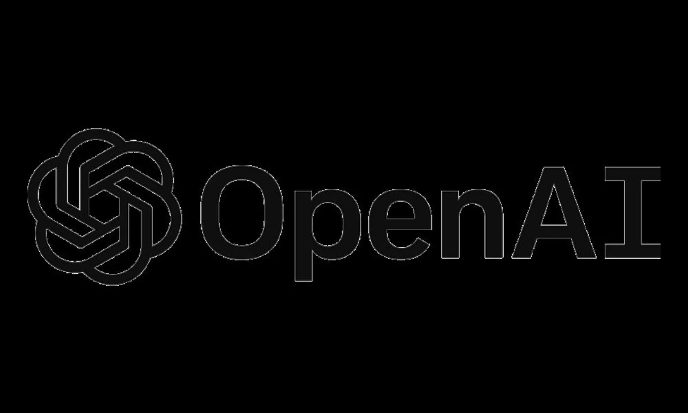
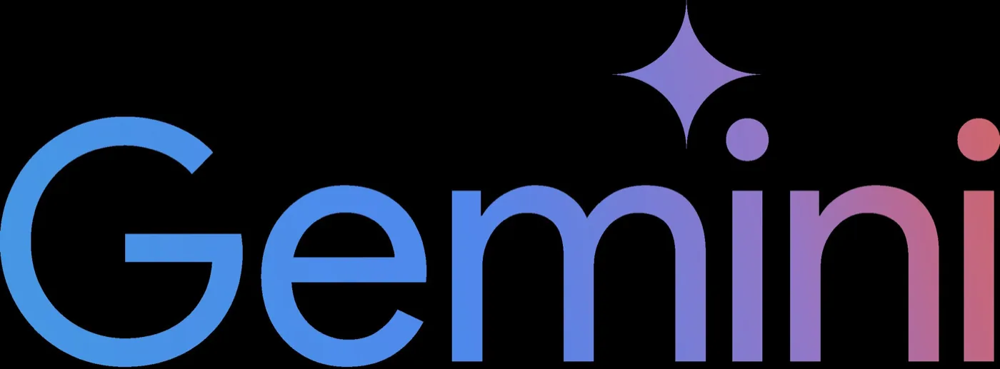

Comment calculer l'impact ?
Trois fournisseurs publient des chiffres. Ces chiffres ne se comparent pas.
Ce que publient les fournisseurs
| OpenAI | Gemini | Mistral AI | |
|---|---|---|---|
| Électricité | 0,34 Wh | 0,24 Wh | ? |
| Émissions | ? | 0,03 g. CO₂e | 1,14 g. CO₂e |
| Eau | 0,3 mL | 0,26 mL | 45 mL |
OpenAI : Sam Altman, « The Gentle Singularity », blog personnel, juin 2025. Google : Elsworth et coll., « Measuring the environmental impact of delivering AI at Google Scale », août 2025. Mistral AI : « Our contribution to a global environmental standard for AI », juillet 2025.
Deux chiffres d'électricité
OpenAI

0,34 Wh
Annoncé sur un blog personnel, sans méthode.
Gemini

0,24 Wh
Médiane sur tous les usages, méthode publiée.
OpenAI : blog de Sam Altman, juin 2025. Google : Elsworth et coll., août 2025.
Gemini émet-il 38 fois moins de CO₂ que Mistral AI ?
Probablement pas.
L'écart tient surtout aux méthodes de calcul, qui divergent entre les deux acteurs.
Le périmètre de l'eau
Compte l'eau de refroidissement des serveurs.
Mistral AI
Compte aussi l'eau dépensée en amont : produire l'électricité, fabriquer le matériel.
D'où le facteur 173 entre les deux chiffres.
Compter le carbone
Retient une méthode « marché », qui crédite ses achats d'électricité renouvelable.
Mistral AI
Prend le réseau électrique tel qu'il est.
Ce ne sont pas les mêmes modèles
Donne une médiane sur tous ses usages, dominés par de petits modèles rapides.
Mistral AI
Mesure un grand modèle dense.
Google reconnaît lui-même qu'une comparaison n'a de sens qu'à périmètre de mesure identique.
Trois chiffres, trois niveaux de sérieux
| Méthode publiée | Relu par des tiers | |
|---|---|---|
| OpenAI | Aucune : deux phrases sur un blog | Non |
| Article technique détaillé | Non | |
| Mistral AI | Analyse de cycle de vie complète | Oui |
Mistral AI a fait relire son analyse par Carbone 4, l'ADEME, Resilio et Hubblo.
Ce que ce tableau ne dit pas
Il ne dit pas quel assistant est le plus propre.
Il dit à quel point les entreprises comptent différemment, et à quel point elles s'exposent inégalement à la vérification.
Il faut une méthode commune
Pour obtenir des données comparables, compar:IA s'appuie sur EcoLogits, maintenu par une ONG.
Le même calcul s'applique à tous les modèles. La méthode est publique : on peut la discuter, la refaire, la corriger.
EcoLogits, méthodologie ouverte maintenue par l'association GenAI Impact.
Ce qu'EcoLogits prend en compte
Les paramètres
Combien le modèle en compte, en milliards.
L'architecture
La façon dont le modèle est construit.
Le mix énergétique
L'électricité qui alimente les serveurs.
Et d'autres variables clés.
Ce qu'EcoLogits donne à l'écran
Une énergie
L'électricité mobilisée pour générer la réponse, en milliwattheures (mWh).
Une classe
Une lettre de A à F, qui situe le modèle par rapport aux autres.
Pas d'émissions de CO₂ : personne ne publie où tournent les serveurs ni avec quelle électricité. L'écran s'en tient à ce qui s'estime.
Panneau « Bilan » de compar:IA. Le calcul suppose le mix électrique mondial moyen, pas le mix français.
La classe énergétique, de A à F
Elle se lit par million de jetons produits en sortie.
| Classe | Énergie |
|---|---|
| A | moins de 100 Wh |
| B | moins de 300 Wh |
| C | moins de 1 000 Wh |
| Classe | Énergie |
|---|---|
| D | moins de 3 000 Wh |
| E | moins de 10 000 Wh |
| F | 10 000 Wh et au-delà |
Seuils compar:IA, estimation EcoLogits 0.10.2, PUE 1,2, mix électrique mondial moyen.
Le cas des modèles fermés
Un modèle propriétaire reçoit quand même sa classe A–F, calculée à partir d'une estimation interne.
Il reste écarté du classement « Focus énergie », faute de données publiées.
Ce qu'il faut retenir
- Les chiffres publiés par les fournisseurs ne se comparent pas entre eux.
- Une méthode commune vaut mieux qu'un chiffre officiel : c'est le rôle d'EcoLogits.
- Une estimation reste une estimation. Elle donne un ordre de grandeur, pas une mesure.